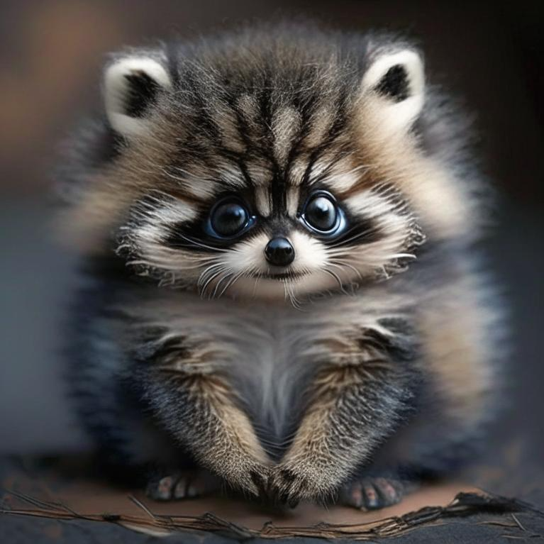

Флуффонг - это маленькое миленькое создание с пушистым мехом и круглыми глазками, напоминающее комбинацию между котенком и енотом. Его хвост длинный и пушистый, он использует его для своей обороны, поворачивая его вокруг себя и создавая густую завивающуюся шерсть, которая отталкивает любых врагов. Флуффонг питается фруктами и ягодами, а его любимым занятием является подъем на деревья, где он проводит большую часть своего времени. Однако, он очень осторожен и скрытен, и редко показывается людям.
